Jenkins pipeline + Slack + Github release
Playing with Jenkins pipeline, git-flow, Slack notification and Github release.
- Test winthin Jenkins a Node.js project hosted on github after each commit.
- Create a Github release if the master branch is merged with a release number in the message.
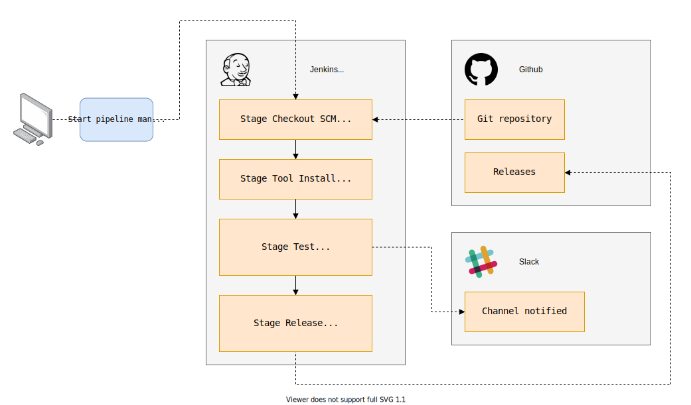
Install and setup the project
Get the code from this github repository :
- The source code for this project is used to run 2 ready-to-use docker containers.
- The setup.sh script is really simple.
# download the code
$ git clone \
--depth 1 \
https://github.com/jeromedecoster/note-jenkins-pipeline-slack-github-release.git \
/tmp/note
# cd
$ cd /tmp/note
Let’s build the git-flow docker image with your own values then start the image :
# cd
$ cd /tmp/note/gitflow
# build the image (replace the placeholders)
$ docker build \
--tag note-gitflow \
--build-arg GIT_CONFIG_NAME=<your-git-name> \
--build-arg GIT_CONFIG_EMAIL=<your-git-email> \
--build-arg NETRC_GITHUB_LOGIN=<your-github-login> \
--build-arg NETRC_GITHUB_PASSWORD=<your-github-password> \
.
# start the image
$ docker run \
--rm \
--tty \
--interactive \
note-gitflow
# you should be in the /tmp directory with the oh-my-zsh prompt
➜ /tmp
In another terminal window, let’s build the jenkins docker image then start the image :
# cd
$ cd /tmp/note/jenkins
# build the image
$ docker build \
--tag note-jenkins \
.
# start the image
$ docker run \
--user 0 \
--publish 8080:8080 \
--volume /var/docker/note-jenkins:/var/jenkins_home \
note-jenkins
If we open https://localhost:8080 we can see Jenkins :
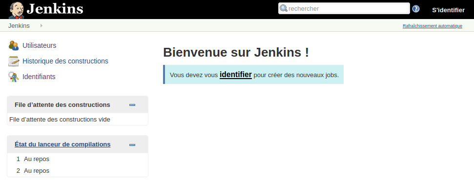
We can login with admin / admin :
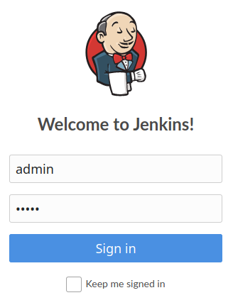
Setup Nodejs
Let’s go to the Jenkins Configure Tools page and :
- Create a version named node-v12.
- Select a 12.x.x LTS version.
- Save the configuration.
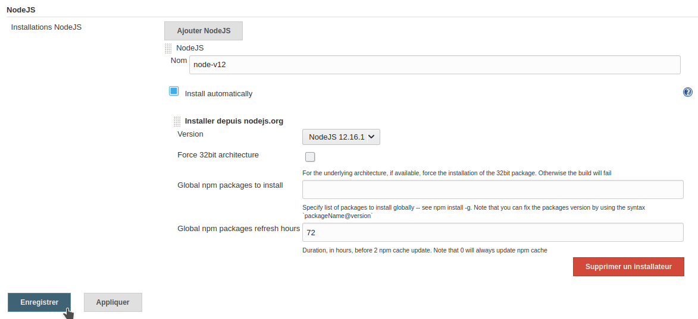
Setup Slack
Now we can go to Slack and :
- Create an account if it’s not already done.
- Create a workpace.
- Then create a channel.
I create the channel my-channel :
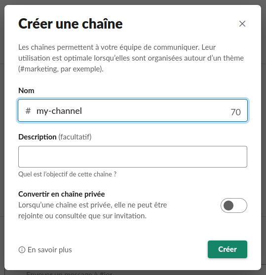
We add the Jenkins CI application to the channel :
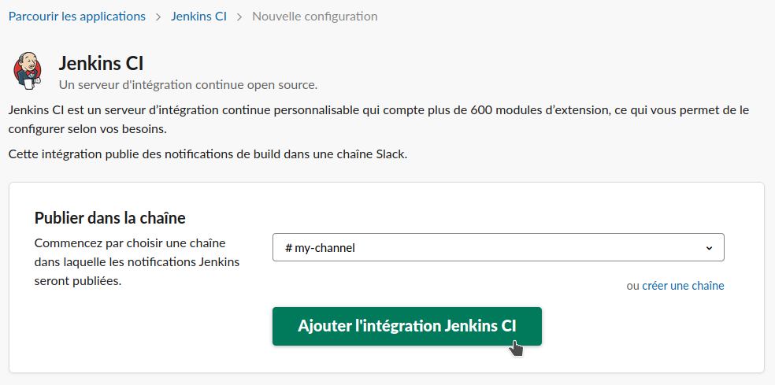
We receive :
- The workspace id.
- The application token.
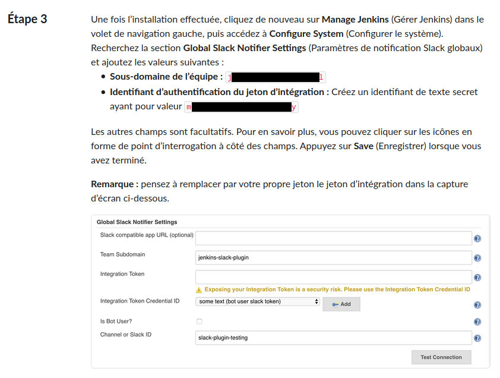
We can go to the Jenkins Credentials page and click Add credentials :
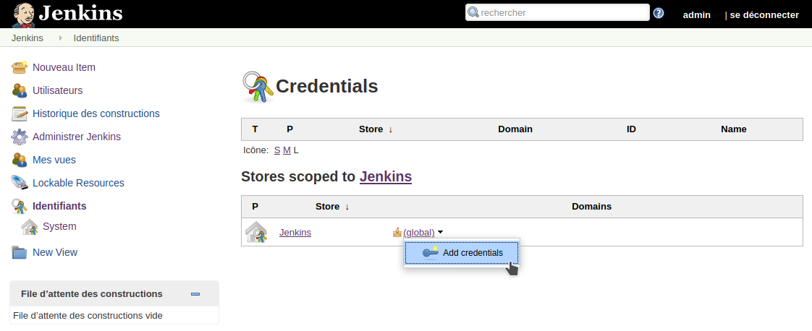
We select the Secret text type :
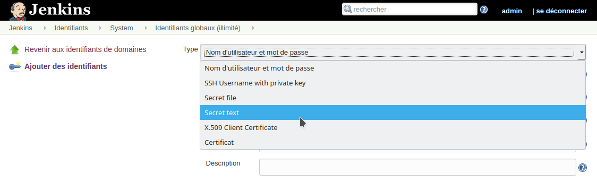
We paste the Secret token and use the name slack-token :
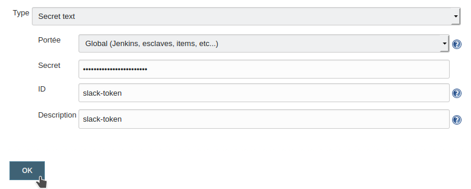
It works :
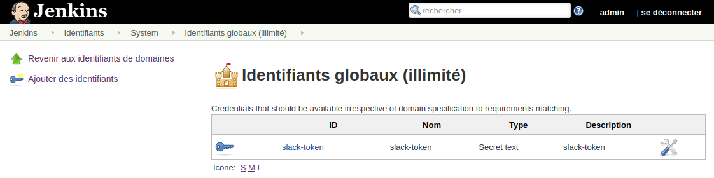
Now we can go to the Jenkins conguration and find the Slack area and :
- Add your workpace without the trailing
.slack.com. - Select the slack-token credential.
- Add the channel name.
- Click the Test connection button and hopefully see the success message.
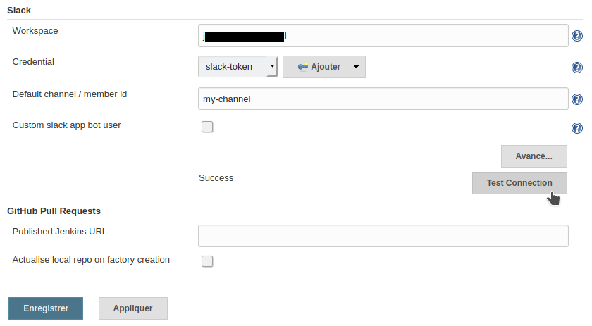
Setup Github
Now we can go to the Github access token page and :
- Create a new token named note-jenkins.
- Check repo.
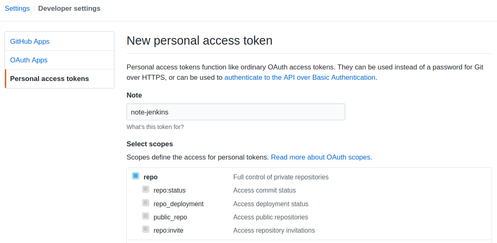
We receive our Github token :

We can go back to the Jenkins Credentials page and add this new credential as github-token :
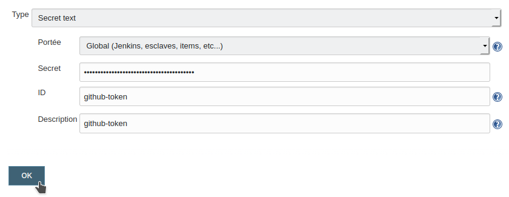
Our tokens are ready :
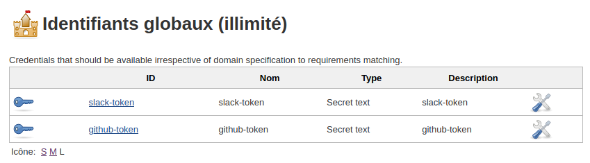
Create the Pipeline
Let’s create a new job :
- Select a Pipeline job.
- Set the name node-project.
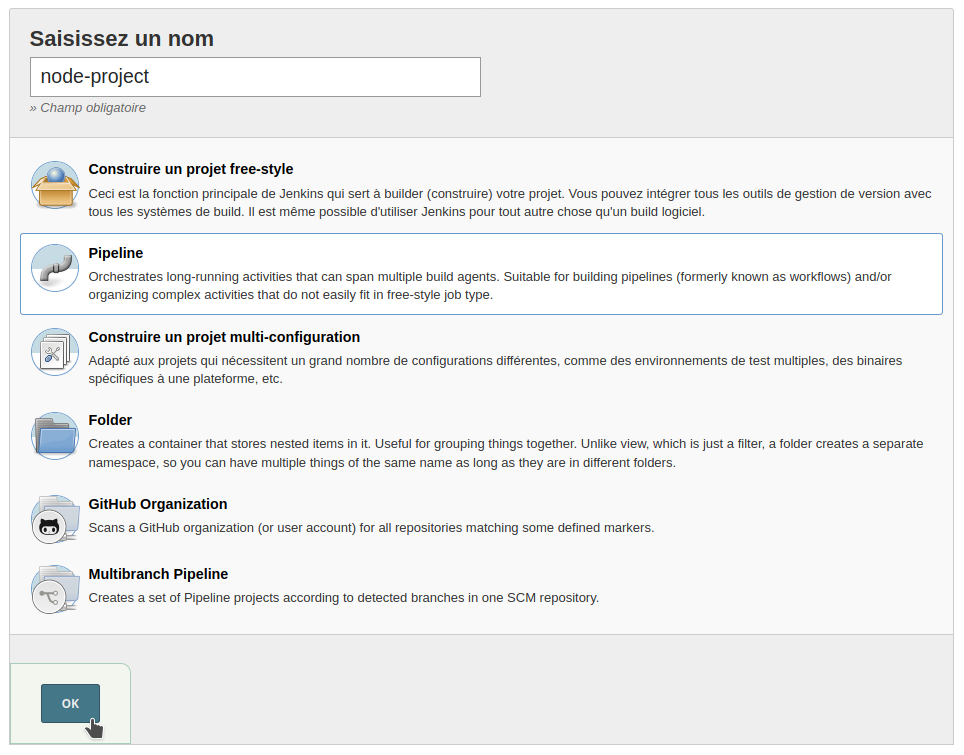
Get the source code of the project.
Fork or clone it then use your repository URL in the Pipeline definition panel :
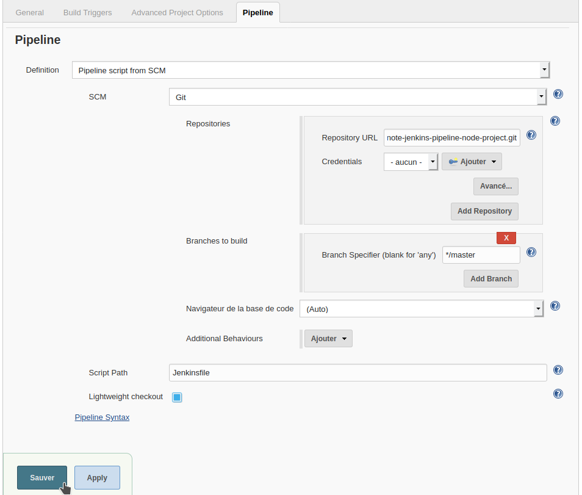
Open the Jenkinsfile in Github in your repository and edit this file in place :
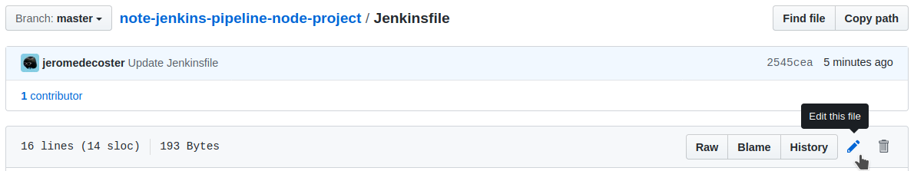
Copy-paste this Groovy code :
- We have 1 stage named Test.
- We send a Slack Notification.
pipeline {
agent any
stages {
stage("Test") {
steps {
slackSend color: "good", message: "Test the *Jenkinsfile*"
}
}
}
}
Then build the project :
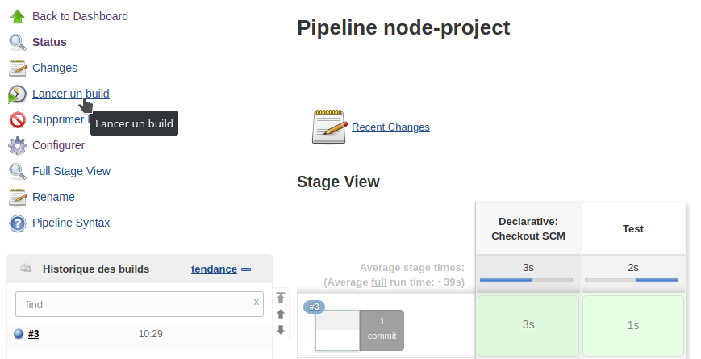
A message must have been displayed in Slack :
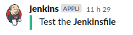
Edit the Jenkinsfile again in Github, replace the previous code with this one :
- We ask for the install of Nodejs.
- Then we execute npm install and npm test.
- Then we send a Slack Notification adjusted according to the test result.
pipeline {
agent any
tools {
nodejs "node-v12"
}
stages {
stage("Test") {
steps {
sh "npm install"
sh "npm test"
}
post {
success {
slackSend color: 'good', message: "${currentBuild.fullDisplayName}: stage(Test) *success*"
}
failure {
slackSend color: 'danger', message: "${currentBuild.fullDisplayName}: stage(Test) *failure*"
}
}
}
}
}
Then build the project :
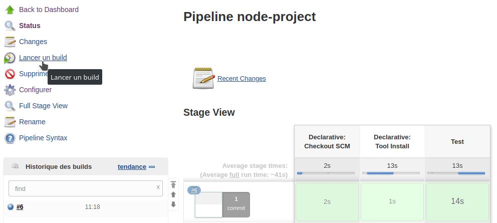
The build logs are good :
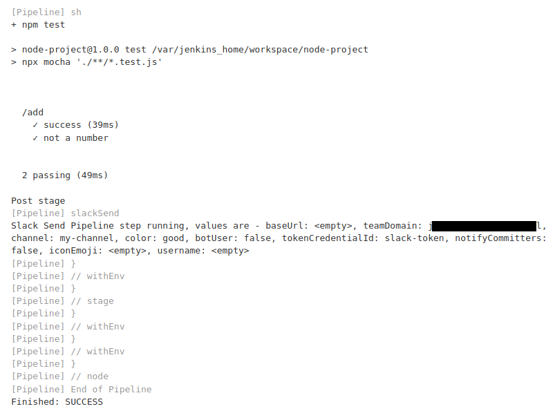
A new message must have been displayed in Slack :
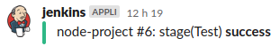
Edit the Jenkinsfile again in Github, replace the previous code with this one :
- Replace the REPO variable with your URL
- The Release stage will create a Github release with curl.
- The release will be done only if the last commit on master is a merge and the message contains a version number (like
v1.0orv2.3.45).
pipeline {
agent any
environment {
REPO = "jeromedecoster/note-jenkins-pipeline-node-project"
}
tools {
nodejs "node-v12"
}
stages {
stage("Test") {
steps {
sh "npm install"
sh "npm test"
}
post {
success {
slackSend color: 'good', message: "${currentBuild.fullDisplayName}: stage(Test) *success*"
}
failure {
slackSend color: 'danger', message: "${currentBuild.fullDisplayName}: stage(Test) *failure*"
}
}
}
stage('Release') {
steps {
withCredentials([string(credentialsId: 'github-token ', variable: 'TOKEN')]) {
sh '''#!/bin/bash
LAST_LOG=$(git log --format='%H' --max-count=1 origin/master)
echo "LAST_LOG:$LAST_LOG"
LAST_MERGE=$(git log --format='%H' --merges --max-count=1 origin/master)
echo "LAST_MERGE:$LAST_MERGE"
LAST_MSG=$(git log --format='%s' --max-count=1 origin/master)
echo "LAST_MSG:$LAST_MSG"
VERSION=$(echo $LAST_MSG | grep --only-matching 'v\\?[0-9]\\+\\.[0-9]\\+\\(\\.[0-9]\\+\\)\\?')
echo "VERSION:$VERSION"
if [[ $LAST_LOG == $LAST_MERGE && -n $VERSION ]]
then
DATA='{
"tag_name": "'$VERSION'",
"target_commitish": "master",
"name": "'$VERSION'",
"body": "'$LAST_MSG'",
"draft": false,
"prerelease": false
}'
curl --data "$DATA" "https://api.github.com/repos/$REPO/releases?access_token=$TOKEN"
fi
'''
}
}
}
}
}
Now we will use our started note-gitflow image :
# clone the repository (use your URL)
➜ /tmp git clone https://github.com/jeromedecoster/note-jenkins-pipeline-node-project.git
# cd
➜ /tmp cd note-jenkins-pipeline-node-project
# init git-flow
➜ note-jenkins-pipeline-node-project git:(master) git flow init --defaults
# we are now on the `develop` branch
➜ note-jenkins-pipeline-node-project git:(develop)
# let's start a `release`
➜ note-jenkins-pipeline-node-project git:(develop) git flow release start v1.0.0
# we are now on the `release/v1.0.0` branch
➜ git-flow git:(release/v1.0.0)
# we add a changelog then commit the change
➜ git-flow git:(release/v1.0.0) echo '# v1.0.0\n' >> changelog.md
➜ note-jenkins-pipeline-node-project git:(release/v1.0.0) ✗ git add --all
➜ note-jenkins-pipeline-node-project git:(release/v1.0.0) ✗ git commit --message v1.0.0
# we finish the release
➜ note-jenkins-pipeline-node-project git:(release/v1.0.0) git flow release finish v1.0.0
The merge message :
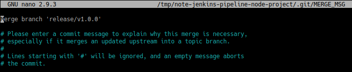
The tag message :
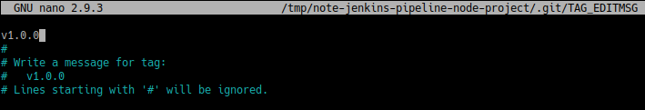
The final message :
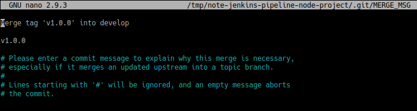
Let’s push the changes on Github :
# we are back on the `develop` branch
➜ git-flow git:(develop)
# push to github (with -u)
➜ git-flow git:(develop) git push -u origin master
Then build the project :
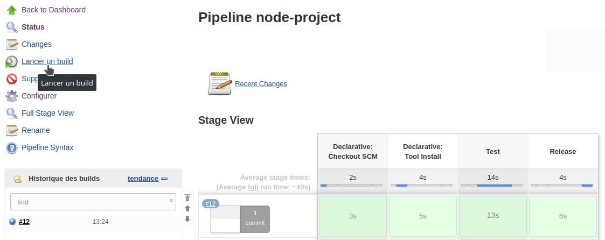
The build logs are good :
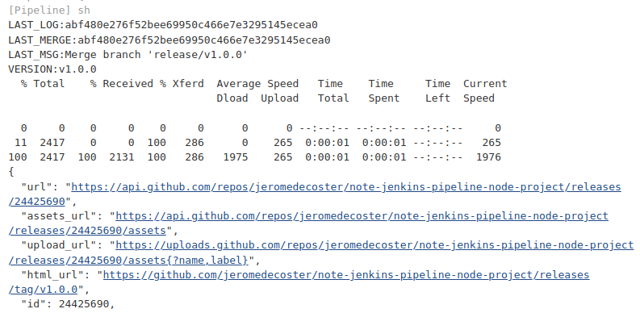
We can see our release in Github release page :
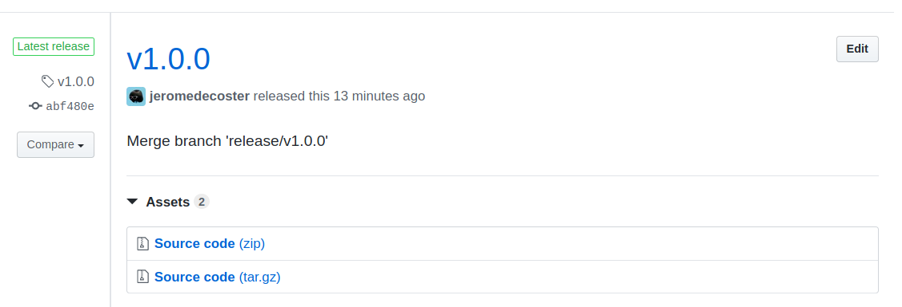